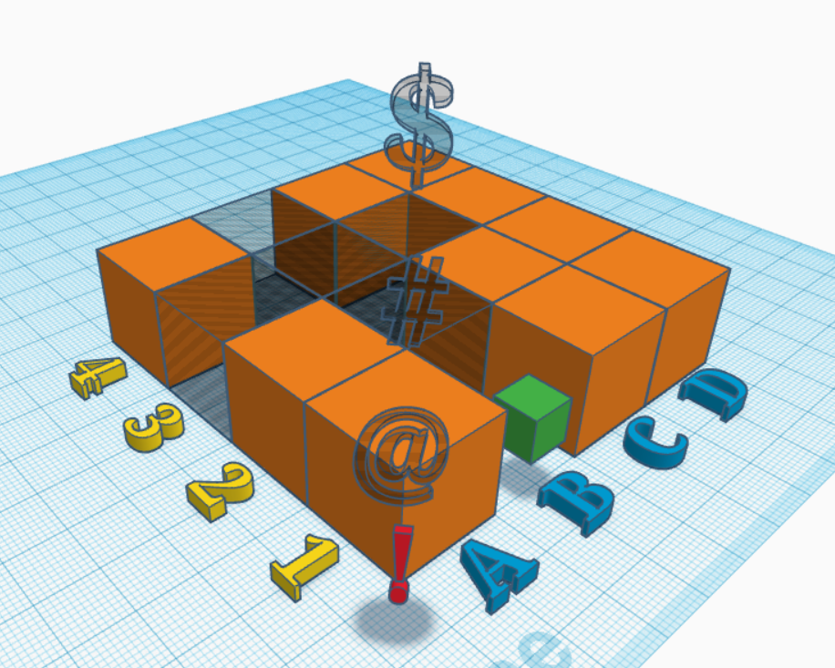
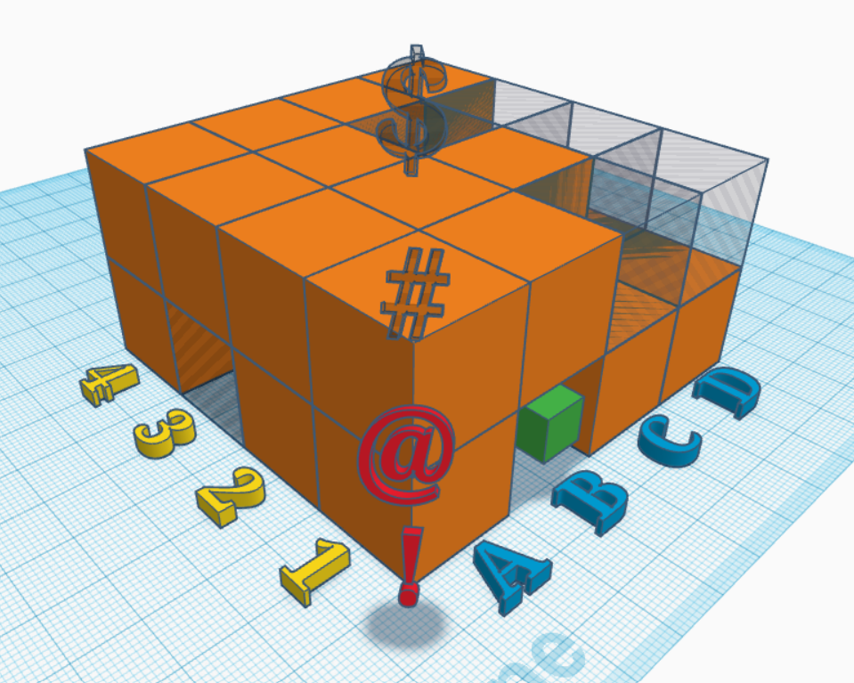
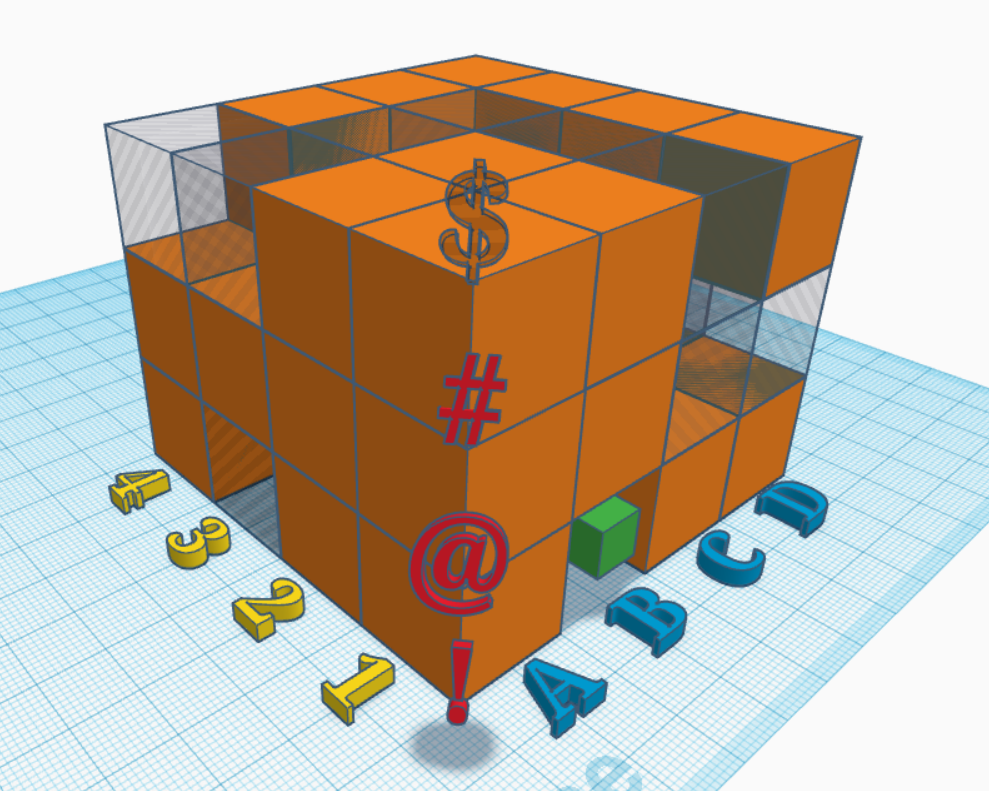
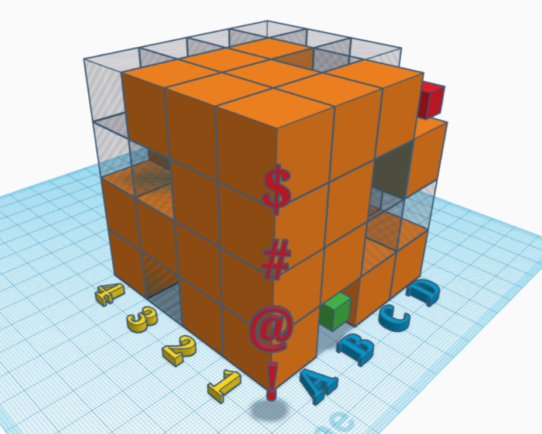

Navigație 3D
Atenție agenți! În acest test trebuie să vă folosiți abilitățile de călători tridimensionali, și să codificați punctele cheie ale traiectoriei în interiorul clădirii civilizației țintă din galaxia Messier 104.
Această încercare ne asigură de abilitatea și eficiența voastră de a ajunge rapid și corect la camera cu baza de date țintă.
Regulile sunt după cum urmează:
Clădirea-model este împărțită în 64 de cuburi, pe câte 4 poziții posibile pe fiecare dintre cele 3 axe.
Axele sunt numerotate în imagini cu caractere alfanumerice: 'A, B, C, D' - '1, 2, 3, 4' - '!, @, #, $'. Fiecare poziție este astfel descrisă de 3 caractere.
Punctul de plecare trebuie să fie cubul verde (coordonate 'B1!'), iar cel de sosire cubul roșu (coordonate 'D1$').
Călătoria se poate face doar prin spațiile transparente, pe câte una din cele 3 axe (deci nu pe diagonale), și nu se paote ieși din gridul de 4 x 4 x 4. (Think outside the box, but stay inside the box).
Codul final este compus din coordonatele cuburilor transparente vizitate, în formatul [literă][număr][simbol]. De exemplu, prima coordonată este B1!, și ultima este D1$, așadar codul va avea forma 'B1![...]D1$'.
Există o singură traiectorie considerată corectă, și aceea este cea mai scurtă dintre toate traiectoriile posibile.
Aici este schema clădirii, în 4 secțiuni care permit vizualizarea structurii interne:




Puteți verifica soluția în chenarul de mai jos. Baftă!
Felicitări!
Abilitățile voastre de navigare vă vor conduce precis la locația datelor secrete.
Găsești mai jos locația următorului test. Mergi și caută codul QR pentru a înainta!
Nu uita să salvezi codul de acces pentru a putea accesa următorul checkpoint: